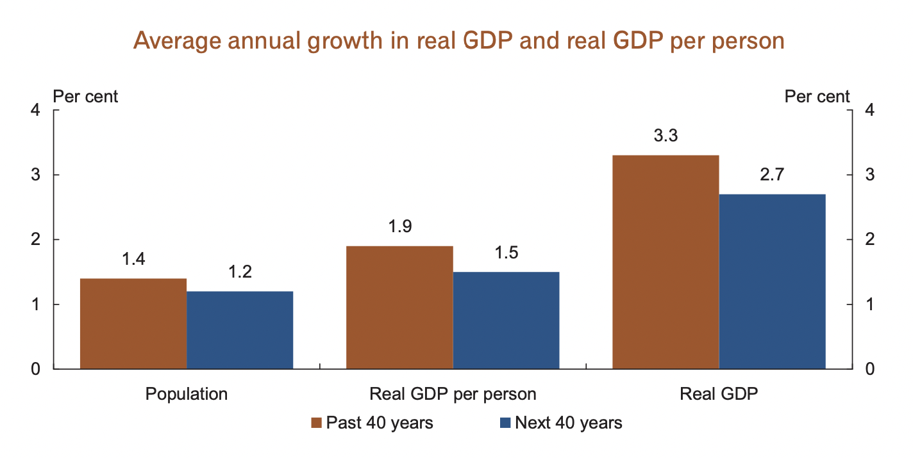

Australia: to 2050
from the 2010 Intergenerational Report
population
economics
climate change
population
An Ageing Population
Supporting the Ageing Population
A Growing Population
An Ageing Population
As life expectancy increases, the number of people exceeding working age will increase, meaning proportionally less workers - both in aiding the development of the economy and the caring for these retirees. This will place increasing pressure on economic growth and consequently the rising standards of living. The ageing population will also result in fiscal pressures because of the demand for government services.
Between 2010 and 2050 in Australia:
- The number of people aged 65-84 years is expected to more than double.
- The number of people aged 85+ years is expected to more than quadruple.
In contrast to this:
- The number children in only expected to increase by 45%.
- The number prime-age working people is only expected to increase by 44%.
Supporting the Ageing Population
The number of people in the population aged 85 and over is expected to more than quadruple over the next 40 years. This group has the greatest need for formal aged care. Australian Government spending on aged care is projected to increase as a proportion of GDP from 0.8 per cent in 2009-10 to around 1.8 per cent in 2049-50. Over the next four years the Government will provide more than $44 billion in direct financial support for aged and community care.
A Growing Population
Over time, the population will grow, though at a decreasing pace. Population growth will help balance the pressures of an ageing population, however it will place added stress on our infrastructures (e.g. housing), our services (e.g. health) and our environment. Managing this will require extensive forward-planning and investment into strained areas.
economics
Standards of Living
Productivity
Budget Pressures
Sustainable Economic Growth
Standards of Living
Ageing populations mean the GDP per capita will grow at a lesser rate. It is projected that GDP per capita will grow at a rate of 1.5% per annum over the next 40 years, compared to the growth rate of 1.9% per annum from the last 40 years. Economic growth rate is also expected to decrease from the 3.3% over the last 40 years to 2.7% in the next 40.
Productivity
The "labour force participation rate", which is the percentage of the population of employable age, is expected to fall from today's 65%, to 61% by 2050. As a result of this, an increase in productivity will need to be a driving force behing the future economic growth. Australia's productivity is currently growing at the 30-year average rate of 1.6% per year, however this rate will have to increase to ease the economic stresses which can be caused by an ageing population.
Budget Pressures
There is a projected rise in spending on areas like health, pensions and aged care, all due to the nature of an ageing population. Most of these increased costs will be a result of new technologies like medicines, and a continuing demand for better provisions in health services. These demands will add pressure on the government's budget. Meanwhile, the slower economic growth will mean Australia will struggle to meet these new spending costs. Many other factors are contributing to the projected spendings increases, however health costs are estimated to contribute to around two thirds of this. By 2050, spending is expected to exceed revenue by approximately 2.5% of the GDP (Gross Domestic Product).
Sustainable Economic Growth
We have seen the beginning of the steps taken by the Australian Government in ensuring sustainable economic growth in the future.
Whenever the economy shows signs of strong growth, the government aims to limit the spending growth to allow the budget grow to an excess. This strategy will over time lead to the country's spending dropping by percentages of the GDP, placing it significantly on the road to reducing the long-term pressures on spending.
climate change
The Threat of Climate Change
Low Pollution Economy
Supporting Renewable Technologies
The Threat of Climate Change
Climate change is the defining intergenerational issue of our time. As Australia is so hot and dry, it will likely be one of the countries hit hardest by the effects of climate change, and these effects have a detrimental impact on our environment and economy.
Without working to reduce the effects of climate change:
- Lives, health and infrastructure would be affected by increasingly extreme weather events
- Agriculture and other systems would be at risk due to dwindling water supplies
- Many natural locations (e.g. Kakadu NP, Great Barrier Reef) could be threatened
Low Pollution Economy
Early moves towards a low pollution economy will avoid a more abrupt and expensive change further down the line. The long-term transformation costs are estimated around 15% lower under early action.
The Carbon Pollution Reduction Scheme (CPRS) is the tool used to reduce Australia's emissions, and is supported by many government policies such as the Renewable Energy Target and the Clean Energy Initiative (worth $4.5 billion). The benefit of the CPRS is it will allow businesses and communities, rather than the governing bodies, to determine how and where the required emissions reductions will occur.
Supporting Renewable Technologies
The Australian Government has made significant moves towards policies which will encourage people to engage with the research and development, as well as the use of renewable technologies. The government's renewable energy target is one where 20% of electricity supply in Australia comes from renewable sources.
The government is investing billions of dollars into ensuring low emissions and renewable energy is incorporated in many areas of life, such as the $4.5 billion Clean Energy Initiative, focused on low emissions technologies, and the $3 billion Energy Efficient Homes Package, which provides Australian homes money to incorporate efficient insulation, and offers incentives to installing solar systems. This over time will reduce energy usage and save Australians money on energy bills.